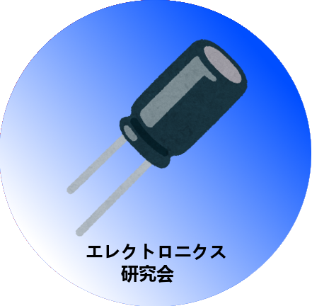
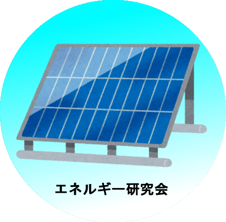
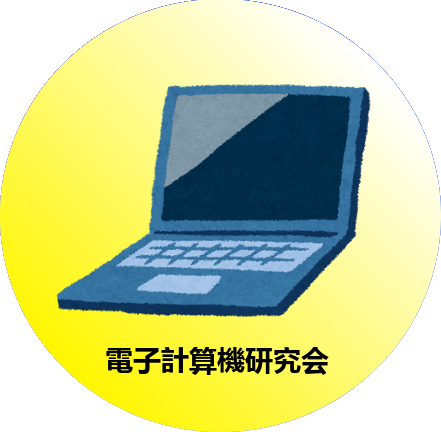

近畿大学科学祭2019
科学祭とは？
アクセスマップ
近大周辺地図
お問い合わせ
近大科学祭2019
●
開催日時: 平成31年?月??日 (?) ??:?? ~ ??:??
●
開催場所: 近畿大学東大阪キャンパス ２号館実学ホール



近大科学祭とは？
7つの研究会がそれぞれの個性を活かしたステージショーやブースでの実験や工作、
展示などを実際に体験してもらい、来場者の方々に楽しさや奥深さを感じてもらいます!